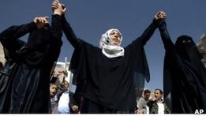

|
|

فراخوان برای همبستگی با زنان خاورمیانه در آستانه روز جهانی زن
چهار شنبه17 اسفند 1390
بی بی سی: عفو بین الملل با صدور اطلاعیه ای خواستار همبستگی و حمایت از زنان مبارز خاورمیانه و شمال آفریقا شده است
عفو بین الملل، از سازمان های جهانی مدافع حقوق بشر درآستانه هشتم مارس، ( هیجدهم اسفندماه) روز جهانی زن با صدور اطلاعیه ای از مردم سراسر جهان خواسته است تا با "زنان شجاعی" که در اعتراضات و قیام های ضد استبدادی درخاورمیانه و شمال آفریقا" نقش محوری" داشتند اعلام همبستگی کنند.

این سازمان حقوق بشری دراین اطلاعیه که روز سه شنبه ششم مارس( شانزدهم اسفند ماه) منتشر شد از جهانیان درخواست کرده با ارسال پیام هایی حمایت خود را اززنان منطقه نشان دهند.
انتظار می رود که به مناسبت روز زن، برنامه های متعددی با تمرکز بر وضعیت زنان در چهار کشورایران، عربستان سعودی، سوریه و یمن برگزار شود.
در این کشورها با توجه به این که حقوق زنان همچنان در معرض تهدید قرار دارد، فعالیت های زیادی برای احقاق حقوق زنان در جریان است.
در اطلاعیه عفو بین الملل، با یادآوری فرا رسیدن روز جهانی زن آمده است که در حالیکه زنان در خاورمیانه و شمال آفریقا انتظار دارند تحولات اخیر باعث پیشرفت در شرایط و رعایت حقوق آنان شود، سرنگونی حکومت های قبلی در شمال آفریقا هنوز به بهبود قابل توجهی در وضعیت زنان منجر نشده است.
به گفته ویدنی براون، مدیر ارشد بخش حقوق و سیاست گذاری بین الملل سازمان عفو بین الملل، در سراسر خاورمیانه و شمال آفریقا زنان نقشی مهم در ایجاد تغییرات داشتند و برای دفاع از حقوق اولیه شان و دستیابی به برابری و اصلاحات، علیه رژیم های استبدادی به پاخاستند.
به گفته آقای براون "امسال در روز جهانی زن، ما با حمایت از این زنان شجاع از تلاش های آنان برای دستیابی به آزادی و حقوق انسانی حمایت کرده و به آنها نشان می دهیم که در این لحظات حساس تاریخی در کنارشان هستیم."
زنان در ایران در جریان اعتراضات پس از انتخابات ژوئن سال ۲۰۰۹ نقش کلیدی داشتند و برای پیشبرد حقوق بشر از جمله کسب آزادی های بیشتر فعالیت های گسترده ای انجام داده اند.
در عین حال، به گفته عفو بین الملل فعالان زن ایرانی برای فعالیت های صلح طلبانه شان بهایی گزاف پرداخته اند.
این سازمان حقوق بشر در بخشی دیگری از اطلاعیه خود می گوید :" درجامعه مردسالار عربستان سعودی، تبعیضاتی علیه زنان اعمال شده و آنها نقشی در تعیین سرنوشت خود در بسیاری از فعالیت های شخصی، اجتماعی، و اقتصادی ندارند."
عفو بین الملل با اشاره به اقدام گروهی از زنان عربستان سعودی برای مقابله با ممنوعیت رانندگی زنان در این کشور، آن را نشانه ای از تلاش برای مقابله با محدودیت های شدید در زمینه حقوق زنان در این کشور عنوان کرده است.
عفو بین الملل از تمامی مردم جهان خواسته تا همبستگی شان را با زنان سعودی در فعالیت آنان در مسیر آزادی ابراز دارند.
از مارس سال گذشته و در پی آغازاعتراضات علیه رژیم بشار اسد، رئیس جمهوری سوریه، بیش از ۶ هزار نفر در این کشور جان خود را از دست داده اند که گفته می شود بیش از ۲۰۰ نفر از آنها زن بودند.
براساس گزارش های دریافتی هزاران زن در جریان این اعتراضات دستگیر و بسیاری از آنها به مکان هایی نامعلوم برده شده و تحت شکنجه قرار گرفته اند .
به گفته عفو بین الملل بعضی از فعالان زن که خواستار ایجاد اصلاحات صلح آمیز در سوریه هستند، به دنبال سرکوب های اخیر دراین کشور مجبور شده اند از کشور خود بگریزند.
این سازمان حقوق بشری از مردم سراسر جهان خواسته است تا از همسر بشار اسد بخواهند تا از نفوذ خود برای پایان دادن به خشونت های مستمر و نقض حقوق بشر علیه فعالان زن سوری استفاده کند.
ویدنی براون، از مدیران ارشد عفو بین الملل گفته است: "ما باید از مبارزات مدوام زنان در سراسر خاورمیانه و شمال آفریقا به ویژه در زمینه حقوق بشر حمایت کنیم."